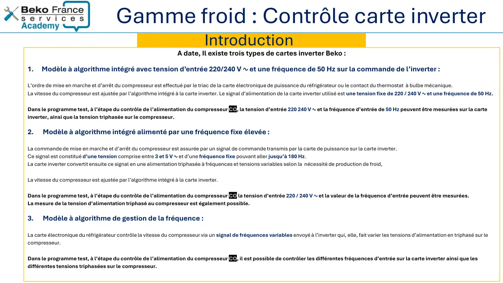
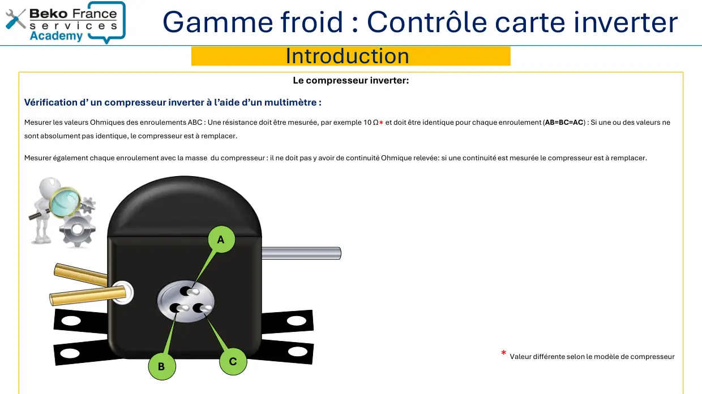
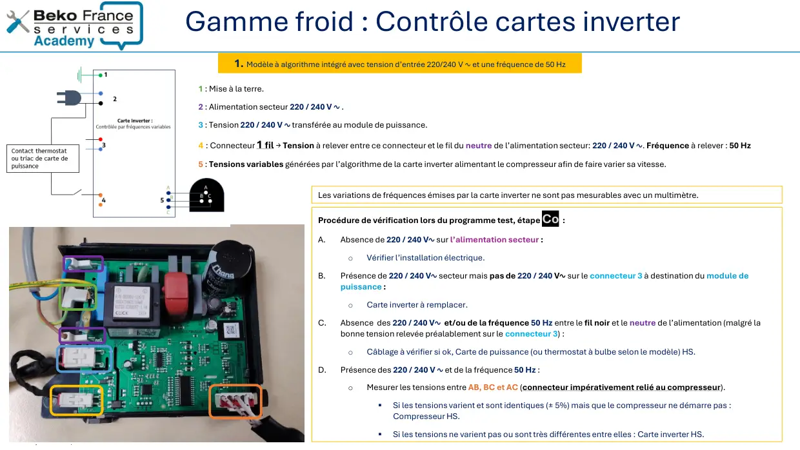
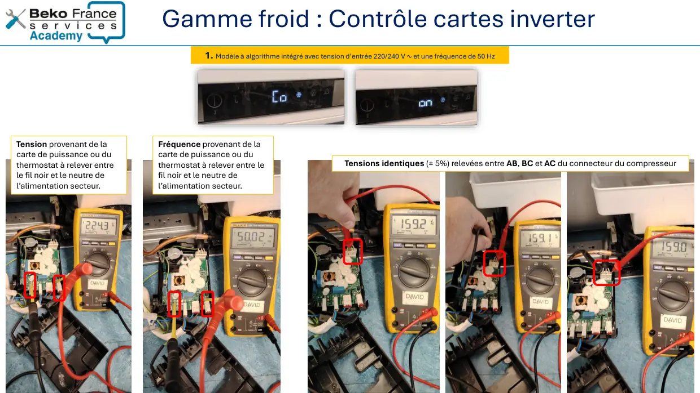
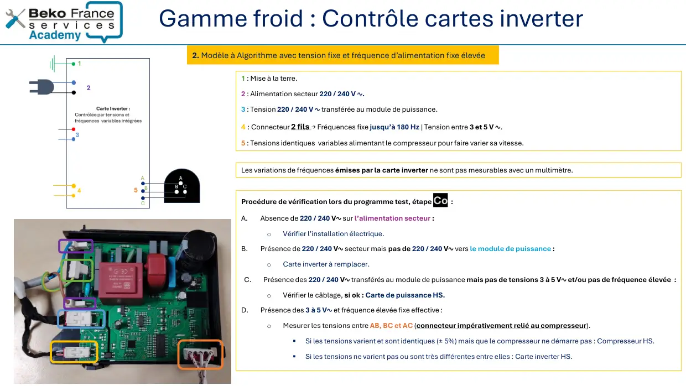
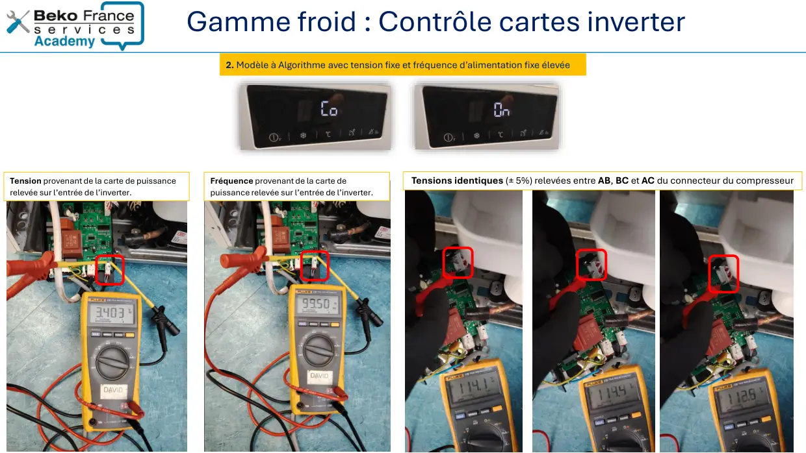
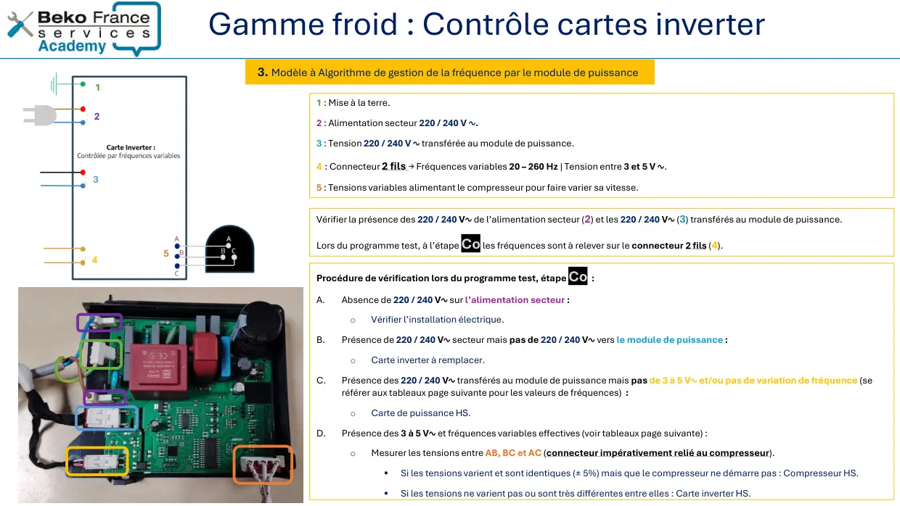
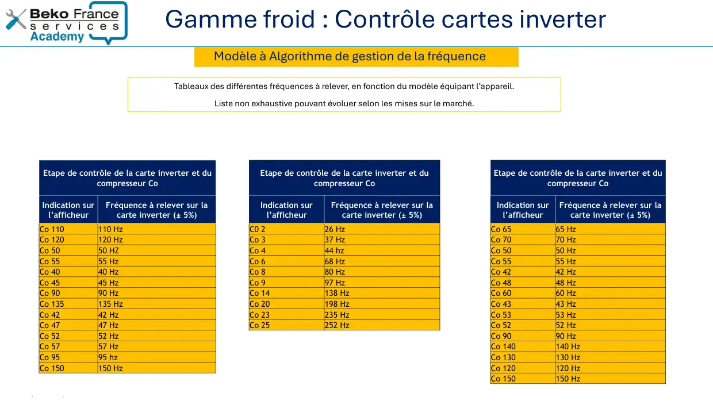
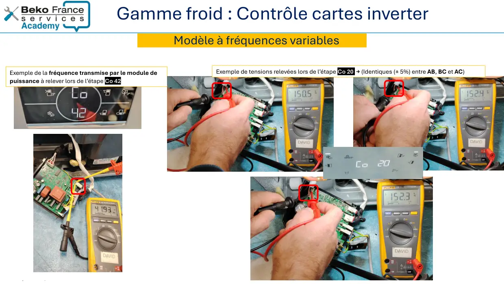

Note Technique Contrôle Cartes Inverter Froid Fabrication Beko
Sensitivity: Internal / Non-Personal DataContrôle carte inverter gamme froidBeko et EAS par Beko
1 / 15Sensitivity: Internal / Non-Personal DataIntroduction
2 / 15
Sensitivity: Internal / Non-Personal DataGamme froid : Contrôle carte inverterA date, Il existe trois types de cartes inverter Beko :1.Modèle à algorithme intégré avec tension d’entrée 220/240 V ∿ et une fréquence de 50 Hz sur la commande de l’inverter :L’ordre de mise en marche et d’arrêt du compresseur est effectué par le triac de la carte électronique de puissance du réfrigérateur ou le contact du thermostat à bulbe mécanique.La vitesse du compresseur est ajustée par l’algorithme intégré à la carte inverter. Le signal d’alimentation de la carte inverter utilisé est une tension fixe de 220 / 240 V ∿ et une fréquence de 50 Hz.Dans le programme test, à l’étape du contrôle de l’alimentation du compresseur CO, la tension d’entrée 220 240 V ∿ et la fréquence d’entrée de 50 Hz peuvent être mesurées sur la carteinverter, ainsi que la tension triphasée sur le compresseur.2. Modèle à algorithme intégré alimenté par une fréquence fixe élevée :La commande de mise en marche et d’arrêt du compresseur est assurée par un signal de commande transmis par la carte de puissance sur la carte inverter.Ce signal est constitué d’une tension comprise entre 3 et 5 V ∿ et d’une fréquence fixe pouvant aller jusqu’à 180 Hz.La carte inverter convertit ensuite ce signal en une alimentation triphasée à fréquences et tensions variables selon la nécessité de production de froid,La vitesse du compresseur est ajustée par l’algorithme intégré à la carte inverter.Dans le programme test, à l’étape du contrôle de l’alimentation du compresseur CO la tension d’entrée 220 / 240 V ∿ et la valeur de la fréquence d’entrée peuvent être mesurées.La mesure de la tension d’alimentation triphasé au compresseur est également possible.3. Modèle à algorithme de gestion de la fréquence :La carte électronique du réfrigérateur contrôle la vitesse du compresseur via un signal de fréquences variables envoyé à l’inverter qui, elle, fait varier les tensions d’alimentation en triphasé sur lecompresseur.Dans le programme test, à l’étape du contrôle de l’alimentation du compresseur CO, il est possible de contrôler les différentes fréquences d’entrée sur la carte inverter ainsi que lesdifférentes tensions triphasées sur le compresseur.Introduction
3 / 15
Sensitivity: Internal / Non-Personal DataGamme froid : Contrôle carte inverterLe compresseur inverter:Vérification d’ un compresseur inverter à l’aide d’un multimètre :Mesurer les valeurs Ohmiques des enroulements ABC : Une résistance doit être mesurée, par exemple 10 Ω* et doit être identique pour chaque enroulement (AB=BC=AC) : Si une ou des valeurs nesont absolument pas identique, le compresseur est à remplacer.Mesurer également chaque enroulement avec la masse du compresseur : il ne doit pas y avoir de continuité Ohmique relevée: si une continuité est mesurée le compresseur est à remplacer.IntroductionACB* Valeur différente selon le modèle de compresseur
4 / 15Sensitivity: Internal / Non-Personal Data1. Modèle à algorithme intégré avec tension d’entrée 220/240 V ∿ etune fréquence de 50 Hz sur la commande de l’inverter.
5 / 15
Sensitivity: Internal / Non-Personal Data1 : Mise à la terre.2 : Alimentation secteur 220 / 240 V ∿ .3 : Tension 220 / 240 V ∿ transférée au module de puissance.4 : Connecteur 1 fil → Tension à relever entre ce connecteur et le fil du neutre de l’alimentation secteur: 220 / 240 V ∿. Fréquence à relever : 50 Hz5 : Tensions variables générées par l’algorithme de la carte inverter alimentant le compresseur afin de faire varier sa vitesse.Gamme froid : Contrôle cartes inverter1. Modèle à algorithme intégré avec tension d’entrée 220/240 V ∿ et une fréquence de 50 HzProcédure de vérification lors du programme test, étape Co :A.Absence de 220 / 240 V∿ sur l’alimentation secteur :oVérifier l’installation électrique.B.Présence de 220 / 240 V∿ secteur mais pas de 220 / 240 V∿ sur le connecteur 3 à destination du module depuissance :oCarte inverter à remplacer.C.Absence des 220 / 240 V∿ et/ou de la fréquence 50 Hz entre le fil noir et le neutre de l’alimentation (malgré labonne tension relevée préalablement sur le connecteur 3) :oCâblage à vérifier si ok, Carte de puissance (ou thermostat à bulbe selon le modèle) HS.D.Présence des 220 / 240 V ∿ et de la fréquence 50 Hz :oMesurer les tensions entre AB, BC et AC (connecteur impérativement relié au compresseur).▪Si les tensions varient et sont identiques (± 5%) mais que le compresseur ne démarre pas :Compresseur HS.▪Si les tensions ne varient pas ou sont très différentes entre elles : Carte inverter HS.Les variations de fréquences émises par la carte inverter ne sont pas mesurables avec un multimètre.
6 / 15
Sensitivity: Internal / Non-Personal DataGamme froid : Contrôle cartes inverterTension provenant de lacarte de puissance ou duthermostat à relever entrele fil noir et le neutre del’alimentation secteur.Fréquence provenant de lacarte de puissance ou duthermostat à relever entre lefil noir et le neutre del’alimentation secteur.Tensions identiques (± 5%) relevées entre AB, BC et AC du connecteur du compresseur1. Modèle à algorithme intégré avec tension d’entrée 220/240 V ∿ et une fréquence de 50 Hz
7 / 15Sensitivity: Internal / Non-Personal Data2. Modèle à Algorithme avec tension fixe et fréquence d’alimentationfixe élevée
8 / 15
Sensitivity: Internal / Non-Personal DataGamme froid : Contrôle cartes inverter1 : Mise à la terre.2 : Alimentation secteur 220 / 240 V ∿.3 : Tension 220 / 240 V ∿ transférée au module de puissance.4 : Connecteur 2 fils → Fréquences fixe jusqu’à 180 Hz | Tension entre 3 et 5 V ∿.5 : Tensions identiques variables alimentant le compresseur pour faire varier sa vitesse.Procédure de vérification lors du programme test, étape Co :A.Absence de 220 / 240 V∿ sur l’alimentation secteur :oVérifier l’installation électrique.B.Présence de 220 / 240 V∿ secteur mais pas de 220 / 240 V∿ vers le module de puissance :oCarte inverter à remplacer.C.Présence des 220 / 240 V∿ transférés au module de puissance mais pas de tensions 3 à 5 V∿ et/ou pas de fréquence élevée :oVérifier le câblage, si ok : Carte de puissance HS.D.Présence des 3 à 5 V∿ et fréquence élevée fixe effective :oMesurer les tensions entre AB, BC et AC (connecteur impérativement relié au compresseur).▪Si les tensions varient et sont identiques (± 5%) mais que le compresseur ne démarre pas : Compresseur HS.▪Si les tensions ne varient pas ou sont très différentes entre elles : Carte inverter HS.2. Modèle à Algorithme avec tension fixe et fréquence d’alimentation fixe élevéeLes variations de fréquences émises par la carte inverter ne sont pas mesurables avec un multimètre.
9 / 15
Sensitivity: Internal / Non-Personal DataGamme froid : Contrôle cartes inverter2. Modèle à Algorithme avec tension fixe et fréquence d’alimentation fixe élevéeFréquence provenant de la carte depuissance relevée sur l’entrée de l’inverter.Tension provenant de la carte de puissancerelevée sur l’entrée de l’inverter.Tensions identiques (± 5%) relevées entre AB, BC et AC du connecteur du compresseur
10 / 15Sensitivity: Internal / Non-Personal Data3. Modèle à algorithme de gestion de la fréquence par lemodule de puissance
11 / 15
Sensitivity: Internal / Non-Personal DataGamme froid : Contrôle cartes inverter1 : Mise à la terre.2 : Alimentation secteur 220 / 240 V ∿.3 : Tension 220 / 240 V ∿ transférée au module de puissance.4 : Connecteur 2 fils → Fréquences variables 20 – 260 Hz | Tension entre 3 et 5 V ∿.5 : Tensions variables alimentant le compresseur pour faire varier sa vitesse.Vérifier la présence des 220 / 240 V∿ de l’alimentation secteur (2) et les 220 / 240 V∿ (3) transférés au module de puissance.Lors du programme test, à l’étape Co les fréquences sont à relever sur le connecteur 2 fils (4).Procédure de vérification lors du programme test, étape Co :A.Absence de 220 / 240 V∿ sur l’alimentation secteur :oVérifier l’installation électrique.B.Présence de 220 / 240 V∿ secteur mais pas de 220 / 240 V∿ vers le module de puissance :oCarte inverter à remplacer.C.Présence des 220 / 240 V∿ transférés au module de puissance mais pas de 3 à 5 V∿ et/ou pas de variation de fréquence (seréférer aux tableaux page suivante pour les valeurs de fréquences) :oCarte de puissance HS.D.Présence des 3 à 5 V∿ et fréquences variables effectives (voir tableaux page suivante) :oMesurer les tensions entre AB, BC et AC (connecteur impérativement relié au compresseur).▪Si les tensions varient et sont identiques (± 5%) mais que le compresseur ne démarre pas : Compresseur HS.▪Si les tensions ne varient pas ou sont très différentes entre elles : Carte inverter HS.123453. Modèle à Algorithme de gestion de la fréquence par le module de puissance
12 / 15
Sensitivity: Internal / Non-Personal DataGamme froid : Contrôle cartes inverterModèle à Algorithme de gestion de la fréquenceEtape de contrôle de la carte inverter et ducompresseur CoIndication surl’afficheurFréquence à relever sur lacarte inverter (± 5%)Co 110110 HzCo 120120 HzCo 5050 HZCo 5555 HzCo 4040 HzCo 4545 HzCo 9090 HzCo 135135 HzCo 4242 HzCo 4747 HzCo 5252 HzCo 5757 HzCo 9595 hzCo 150150 HzEtape de contrôle de la carte inverter et ducompresseur CoIndication surl’afficheurFréquence à relever sur lacarte inverter (± 5%)C0 226 HzCo 337 HzCo 444 hzCo 668 HzCo 880 HzCo 997 HzCo 14138 HzCo 20198 HzCo 23235 HzCo 25252 HzEtape de contrôle de la carte inverter et ducompresseur CoIndication surl’afficheurFréquence à relever sur lacarte inverter (± 5%)Co 6565 HzCo 7070 HzCo 5050 HzCo 5555 HzCo 4242 HzCo 4848 HzCo 6060 HzCo 4343 HzCo 5353 HzCo 5252 HzCo 9090 HzCo 140140 HzCo 130130 HzCo 120120 HzCo 150150 HzTableaux des différentes fréquences à relever, en fonction du modèle équipant l’appareil.Liste non exhaustive pouvant évoluer selon les mises sur le marché.
13 / 15
Sensitivity: Internal / Non-Personal DataModèle à fréquences variablesExemple de la fréquence transmise par le module depuissance à relever lors de l’étape Co 42Exemple de tensions relevées lors de l’étape Co 20 → (Identiques (± 5%) entre AB, BC et AC)Gamme froid : Contrôle cartes inverter
14 / 15Sensitivity: Internal / Non-Personal Data
15 / 15